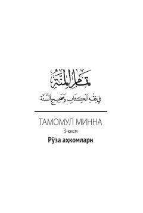

TMQur'on va sahih hadislar asosida islomda ro'za tutish qoidalari va ahkomlari bayon etilgan kitob.
Ushbu kitob shayx Odil Yusuf Azzoziyning «Tamomul minna» asarining ro'za ahkomlariga bag'ishlangan uchinchi qismidir. Asar Qur'oni karim oyatlari va sahih hadislar asosida islom fiqhi va ibodat qoidalarini sodda hamda ravon tilda bayon qiladi. Kitob keng kitobxonlar ommasiga islomiy ilmlar, xususan ro'za ibodati va uning hukmlarini o'rgatish maqsadida tayyorlangan.